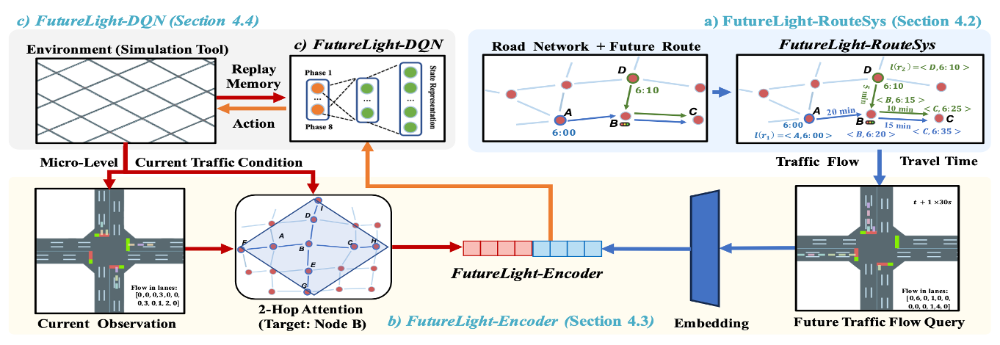
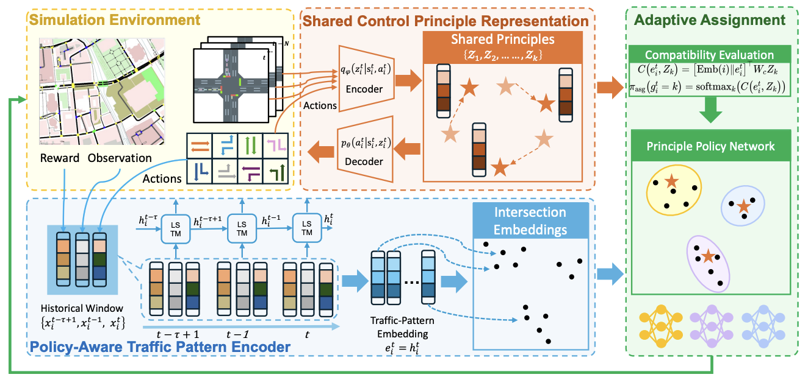
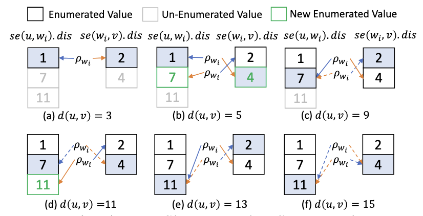
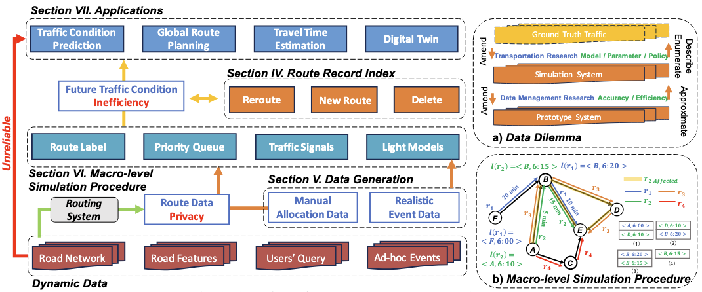
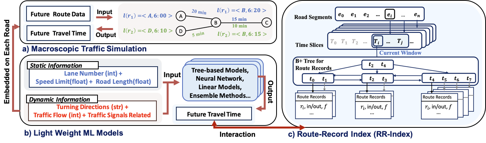
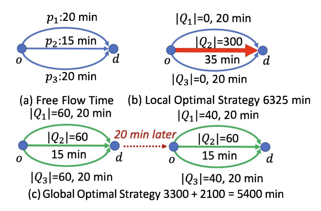
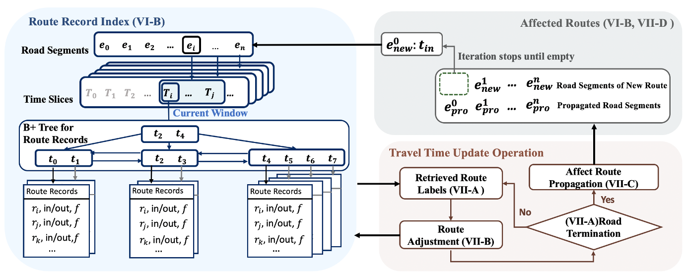
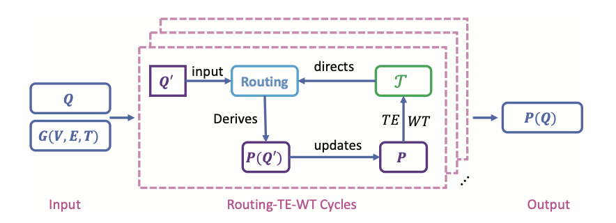

About Me
I am currently a Postdoctoral Fellow in the Department of Computer Science and Engineering at the Hong Kong University of Science and Technology (HKUST). I obtained my Ph.D. in Data Science and Analytics from HKUST in March 2026. Before that, I received my M.S. in Biostatistics and Data Science from Cornell University in July 2021, and my B.S. in Statistics with a minor in Computer Science from the University of Delaware in May 2020.
Research Interests
- Data management: spatio-temporal data, graph data, and future route management.
- Intelligent transportation: traffic prediction, route planning, and traffic signal control.
- Simulation: traffic simulation and digital twins.
Publications

VLDBFutureLight: A Traffic-Aware Reinforcement Learning Framework for Traffic Signal Control
International Conference on Very Large Data Bases (VLDB), 2026.

ICMLScalable Traffic Signal Control with Shared Policy Framework
International Conference on Machine Learning (ICML), 2026.

ICDEiKSP: A Path Enumeration Index for Road Networks
IEEE International Conference on Data Engineering (ICDE), 2026.

ICDEUltra-Flexible, Explainable, and Scalable Traffic Prediction with Dynamic Future Routes
IEEE International Conference on Data Engineering (ICDE), 2025.

SIGSPATIALRouteSys: A Future Route Data Management System
ACM SIGSPATIAL International Conference on Advances in Geographic Information Systems (SIGSPATIAL), 2025.

TKDEGlobal optimal travel planning for massive travel queries in road networks
IEEE Transactions on Knowledge and Data Engineering (TKDE), 2024.

ICDEManaging the Future: Route Planning Influence Evaluation in Transportation Systems
IEEE International Conference on Data Engineering (ICDE), 2024.

ICDEGlobal routing optimization in road networks
IEEE International Conference on Data Engineering (ICDE), 2023.
Academic Service
- Journal reviewer: World Wide Web Journal.
- Conference reviewer: ACM SIGSPATIAL 2026.
- External journal reviewer: IEEE TKDE, IEEE Internet of Things Journal, and The VLDB Journal.
- External conference reviewer: VLDB 2022; ICDE 2022–2024; KDD 2023–2025; CIKM 2022–2024; ICDM 2023; WSDM 2022.